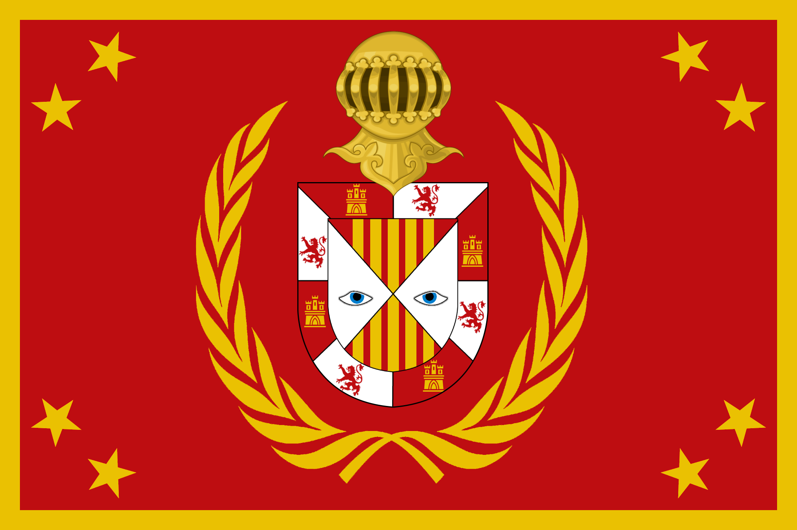

| Guardiola Incident | |||||||||
|---|---|---|---|---|---|---|---|---|---|
| |||||||||
| Belligerents | |||||||||
| United States Colonies |  Guardiola Foundation | ||||||||
| Commanders | |||||||||
| Colonial Leaders
Takashi Akiyama |
Guardiola Leaders | ||||||||
| Strength | |||||||||
| 22,000 | 8,000 | ||||||||
| Casualties and losses | |||||||||
| 103,000 | 7600 | ||||||||

The Guardiola Incident or the Cislunar War was a conflict between the United States' Orbital and Lunar colonies and the Mediterranean Union based Guardiola Foundation. Though never formally recognized by any major power on Earth as an actual war, it remains a controversial incident in the minds of colonials.
After a particularly daring attempt on the life on Takashi Akiyama, who was serving as Chairman of the Interplanetary Trade Commission at the time, the Guardiolas were formally disavowed by the MU. The loss of support from the MU drove the Guardiolas to, what was officially designated "a Major Terrorist Attack," by the governments on Earth. To the colonies, it was all out war. The Guardiola incident lasted barely a year, and the colonies directly engaged them in low orbit, but never directly operated on Earth proper. After the end of the conflict the Guardiolas slowly crumbled, eventually dissolving with the MU in 2102.
Background[]
The Guardiola Foundation, a radical anti-Colonial faction of the Mediterranean Union, were founded from within the MU aristocracy. The Guardiolas, while not formally opposed to the idea of space colonization, saw the current power structure of the colonies as a direct threat to their way of life. The post-scarcity colonies flew in the face of the MU's foundation of near feudalistic capitalism. The Guardiolas, like the other oligarchs of the MU, who's way of life were dependent on profits from investments in agribusiness in the Sahara, saw the colonies as potential sources of revolution against their business interests. On a broader level, the Guardiolas saw the growing power of the colonies as a prelude to their dominance over the Earth.
The Guardiolas began conducting minor cyber and physical terrorist attacks against the space colonies in the Earth-Luna system in the early 2090s, never fromally endorsed by the MU. The Guardiolas were supported by Mexico through unofficial channels within the MU, in the hopes of detering further American monopolization of the colonies. Thoughout the 2090s the Guardiolas continued antagonizing the Earth-Luna colonies; banning the sale of goods imported from the colonies, publishing Terran nativist propaganda, and in some cases attacking civilian spacecraft. Despite continued protests from the colonies to Congress and the Mediterranean Union, harassment and terrorism by the Guardiola Foundation continued for most of the decade.
Course of the War[]
Outbreak[]
On May 1st, 2099, the Guardiolas staged a massive attack on Glen Station at L1 of the Earth-Luna system. Launching from central Africa, a force of 8000 Guardiola Specialists and some 15 assault ships entered Earth orbit disguised as civilian ships en route to the moon via the L1 colony cluster. Glen station was one of the few colonies that also served as an armory for the Earth Planetary Guard, and with Colonial Militias taken by surprise the Guardiolas were able to secure the armory for themselves, and use the colony as a staging point against the rest of the Earth-Luna system's colonies. Shortly after taking Glen station the Specialists launched a series of strikes on several Lagrangian and Lunar colonies, deploying armored infantrymen and support drones against civilian militias. By the end of May 3rd, the Guardiolas had successfully captured all civilian facilities at the L1 colony cluster. The Guardiolas were careful to never attack US Space Force facilities, and focused their efforts against the colonies themselves. Planetary Guard forces fell back to defend the Collins at L2 that served the great O'Neil ships carrying goods from the outer colonies to Earth-Luna. By May 19th, the colonials had managed to hold the Moon, despite heavy losses in orbit and on the surface. At L2, the Guardiolas withdrew after the loss of 1/5 of their fleet.
When the colonial governments, resident commissioners and the ITC all called on the Federal Government for help, they were met with deaf ears. As the Mediterraneans were an ally of Mexico, and while the Guardiolas were only a rogue faction, the US government on Earth refused to get involved directly as it would likely drive the US and Mexico to war after concluding one in South America only a few years earlier. After the final battle at L2, the Territorial governors of Luna approached Chairman Akiyama who immediately called for a united force of colonial militia to quell the Guardiola threat. Mars was quick to send volunteers from its Planetary Guard forces, while the Jovians, Saturnians and Triton all sent what they could via O'Neil ship. While the reinforcements made for the Earth-Luna system, the local militia and planetary guard forces were left to face the Guardiolas at L5 and L4. On July 11, the colony Louverture was decompressed by Guardiola specialists after a four day battle for control of the colony. of the 70,000 residents, only 1,351 survived.
Reinforcements arrive[]
On September 2, 2099, after months of fighting, Martian reinforcements arrived to put down the Guardiolas, who had so far killed over 100,000 people either through direct combat or from decompression. At the battle of Stanford Station, the first wave of Martian ships engaged the Guardiola fleet. With heavy losses on both sides, including the death of Roma Guardiola, the battle came to an end on September 9th. The Guardiolas had lost almost half of their remaining ships at Stanford dispersed to either the Moon or the L4 asteroid quarry, rallying at the few stations they still controlled and even staging a second attempt to reach the lunar surface where they briefly took control of New Moscow before Martian and Lunar Planetary Guard forces retook it on September 29.
At the Second Battle of Summanus, the Guardiola chain of command was broken after Alexandre Viray and his general staff were killed in action, leaving only a handful of senior officers with no command structure between them to organize their defense. Several captains attempted to organize a final assault on Whidbey Station on December 1, 2099 but were surrounded by the bulk of the colonial fleet.
End of hostilities[]
By January 20, 2100 the Earth orbit had been cleared of the Guardiola presence. For the last several months, Planetary Guard commanders had been devising an assault on the Guardiola stronghold in Catalonia, in what would have been the first invasion of a sovereign state by a colonial force. It was only from the pleads of ITC Chairman Akiyama, often known as “the Other President,” that the colonies did not go through with the invasion, and instead wait for action from the United States government, which had begun a blockade of the MU after the Martians had arrived, in a somewhat lackluster attempt to appease the colonials.
Aftermath[]
The US government, in a desire to save face with its colonies, who had now positioned a very angry force of some 20,000 seasoned space warriors in orbit above Earth, launched a coordinated strike on the Guardiola Foundation’s headquarters, and issued joint warrants with the MU and Mexico for the arrest of its surviving members. This got the colonies to stand down, but they would not forget the betrayal by their own government.
The bad blood between the colonies and Earth after the Guardiola Incident, had turned from contempt to apathy among the majority of the population. As the situation on Earth deteriorated, however, that feeling began to turn to fear and that fear fed the forces of reaction. As the struggle between Mexico and the US threatened to explode into a far worse war than any in this century knew, the colonies feared that such a conflict might spread to them; the specter of the Guardiola Incident continued to haunt the minds of the colonists.
Belt Pirate Wars[]
Of the 7600 Guardiola Specialists and officers killed during the conflict, another 173 were captured before war's end. However 227 Specialists remained unaccounted for, and never returned to Earth. It would later be discovered that a small squadron of Guardiola ships and soldiers had retreated to an abandoned mining asteroid beyond Lunar orbit and left the Earth-Luna system to raid colonial O'Neil Ships and stations in the Asteroid Belt, leading to a series of armed conflicts.